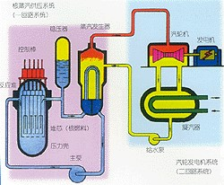

中核集团
2017年核科普开放周活动之第二届全国高校学生课外“核+X”创意大赛
核+动力
主页
概况
核能
核动力
核反应堆
概况
压水堆
基本构成——核能生成系统
主冷却剂系统——内能转换系统
二回路系统——动能输出系统
安全壳
核电站
概况
中国核电站
潜艇核动力装置
概况
中国核潜艇
水面船舰核动力装置
概况
中国核动力航母
空间核能装置
概况
空间核电源
空间核推进装置
发展和研究前景
中、小型核动力发展情况介绍
中、小核动力未来研究的方向
结论
压水堆
压水堆是世界上最早开发的动力堆堆型。压水堆出现后，经过了先军用后民用，由船用到陆用的发展过程。压水堆是目前世界上应用最广泛的反应堆堆型，在已建成的核电站中，压水堆占60％以上，目前世界上拥有大型核电站压水堆的总数为250多座。在一些工业发达国家，压水堆已形成了批量生产能力，燃料组件、控制棒等部件已成为标准化产品，已具有了很成熟的制造工艺。
压水堆以净化的普通水作慢化剂和冷却剂，水的总体温度低于系统压力下的饱和温度。水中含有氢原子核，所以中子慢化性能好，而且水的物理和化学性能为人们熟知。但水的中子吸收截面较大，因此必须用一定富集度的铀作核燃料。此外，在常压下水的沸点低，要使水在高温下不沸腾，就必须在高压下运行，从而才可能获得高的热效率。这样就需要反应堆容器和有关系统都能承受高压，使这些部件的壁厚增大。
压水堆由压力容器、堆芯、堆内构件及控制棒驱动机构等部件组成。

西南科技大学
石晓钟 陈怡志 张鸿德
指导教师 段涛
指导教师 段涛